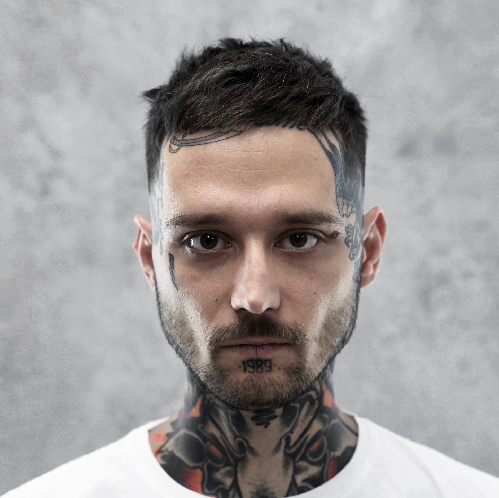

Фэйд (от англ. «fade» — постепенное исчезновение, переход) — это универсальная
техника, применимая,
в
принципе, к любой короткой мужской (и не только!)
Моделирование бороды и усов – процедура, связанная с подбором и созданием формы
растительности
на
лице при помощи бритья опасной бритвой.
Реализм – один из самых популярных стилей тату. Рисунки, выполненные в такой технике, –
натуралистичные, «живые», проработанные до мельчайших деталей.